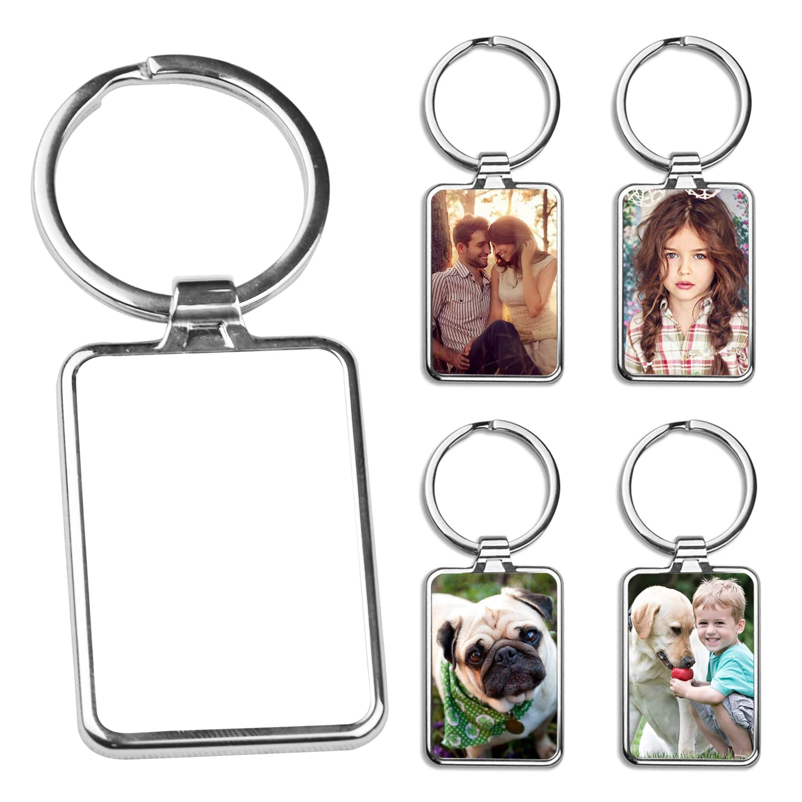
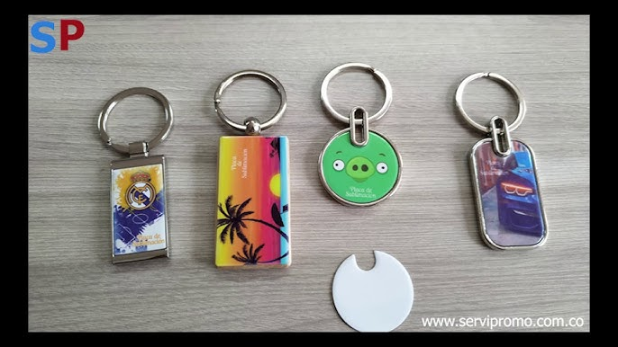
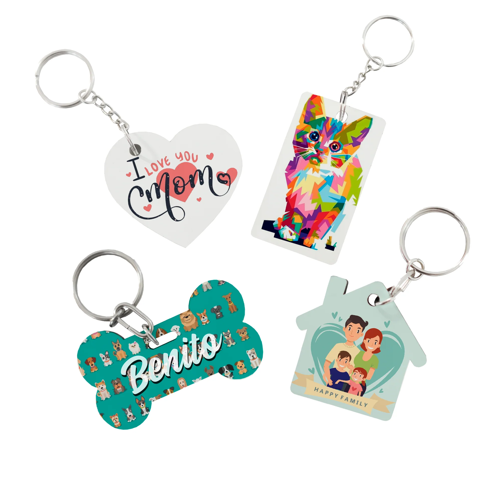

La sublimación es una técnica de impresión que transfiere tinta al calor, penetrando la superficie de materiales especiales para personalizarlos de forma permanente. Es ideal para llaveros de polímero, metal sublimable o MDF.


